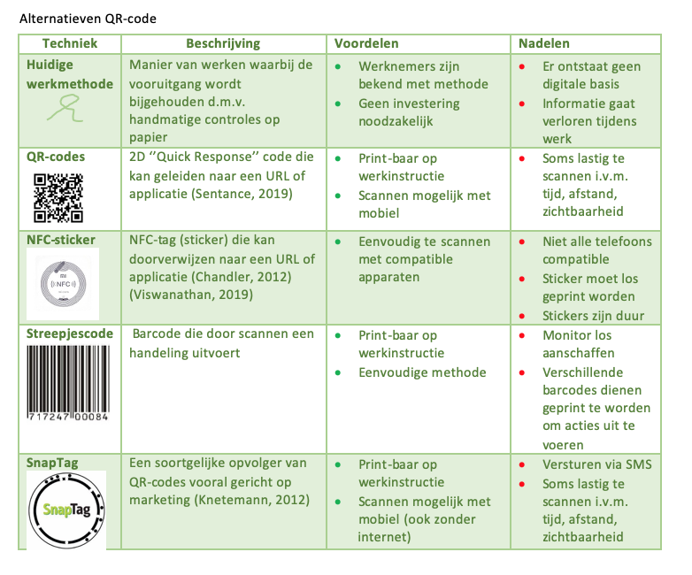
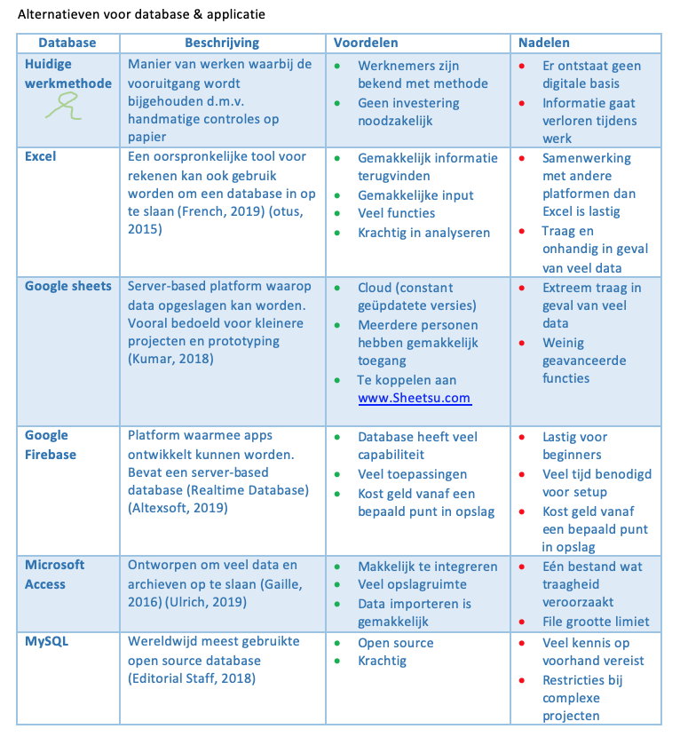
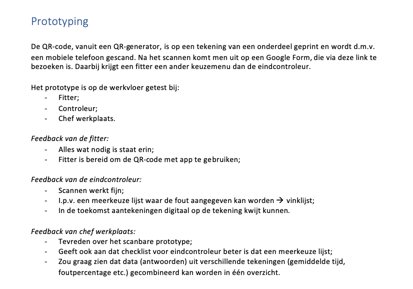
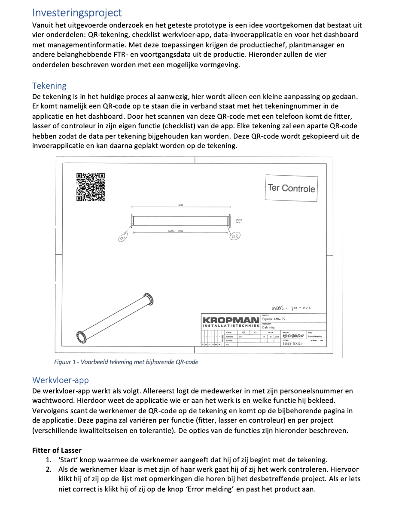
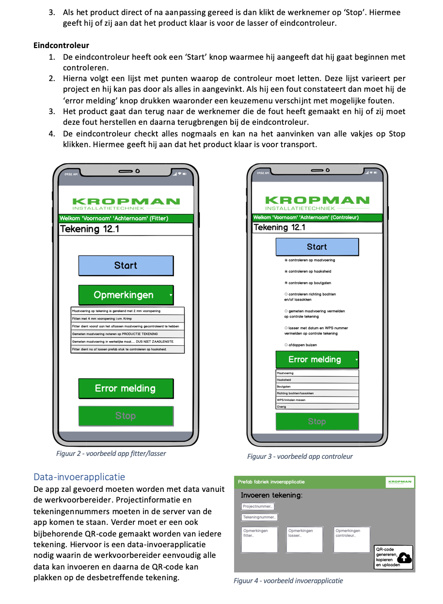
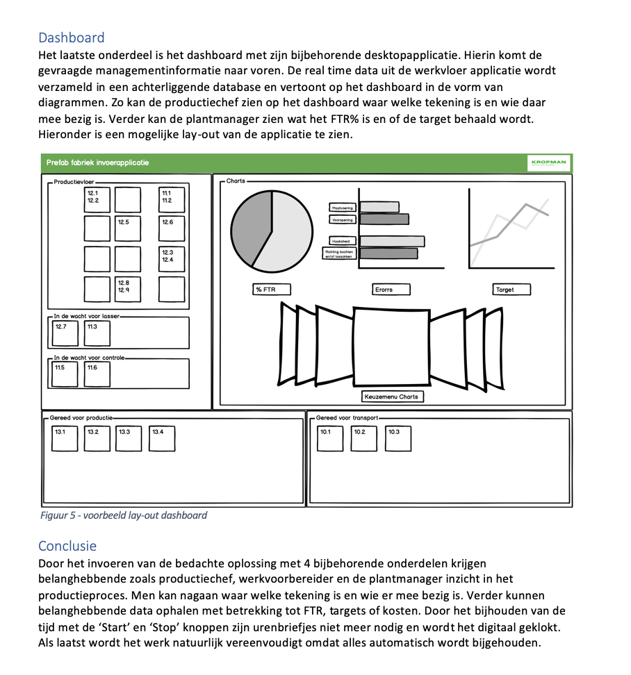

Project Kropman
Introductie
Tijdens het project hebben we grotendeels de DMADV-methode aangehouden. Dit model is een variant van het welbekende DMAIC-model. Het verschil is dat DMAIC-projecten gericht zijn op bestaande processen of producten en DMADV is gericht op nieuwe processen of producten. Tijdens het project zal gezocht worden naar een digitaliseringsoplossing voor het bedrijfsproces. Om tot deze oplossing te komen worden de fases Define, Measure, Analyse, Design en Verify doorlopen om tot een gestructureerd eindresultaat te komen.
Define fase
In de Define fase hebben we onszelf beziggehouden met het PvA schrijven. Het was belangrijk om een goed communicatieplan te schrijven omdat het anders verkeerd kan vallen bij de mensen op de werkvloer. Voor de eerste intervisiesessie hadden we een PowerPoint gemaakt over de Define fase van het project, deze is hieronder te zien. Verder heb ik ook een link naar het PvA: https://1drv.ms/w/s!AvqRz_HoR6XhkUB3wKo_2wZmnWpP.
❮ ❯Measure/Analyse fase
In de volgende situatie hebben we de huidige en gewenste situatie geschetst van het bedrijf. Dit hebben we gedaan door middel van een BPMn/Brownpaper. Het proces is te doorlopen via als je de pijltjes volgt en wordt verduidelijkt door de plaatjes die erbij staan. Aan de rechterkant van iedere situatie is alle informatie op het product te zien en aan de linkerkant alle informatie op tekeningen. Hieronder links is de huidige situatie te zien en rechts is de gewenste situatie te zien.


Daarnaast hebben we ook naar alternatieven gekeken voor de oplossing. We hebben gekeken naar alternatieven voor het scan proces en voor een database. Deze zijn hieronder uitgewerkt in twee verschillende tabellen.
 Bronnen
QR-code:
https://econsultancy.com/the-pros-and-cons-of-qr-codes/
NFC-sticker:
https://electronics.howstuffworks.com/nfc-tag1.htm
https://www.lifewire.com/near-field-communication-pros-and-cons-4042334
Snaptag:
https://www.marketingfacts.nl/berichten/20111223_snaptags_de_branded_en_marketingvriendelijke_versie_van_qr
Excel:
https://www.lifewire.com/create-a-database-in-excel-3123446
https://stackoverflow.com/questions/30184577/pros-and-cons-of-using-an-excel-file-as-a-database
Google sheets:
https://codingislove.com/google-sheets-database/
Google Firebase:
https://www.altexsoft.com/blog/firebase-review-pros-cons-alternatives/
Microsoft Access:
https://brandongaille.com/13-pros-and-cons-of-microsoft-access/
https://www.dummies.com/software/microsoft-office/access/what-is-microsoft-access-and-what-do-you-use-it-for/
MySQL:
https://www.wpblogx.com/what-is-mysql/
Design/Verify fase
Na de gewenste situatie te hebben beschreven gingen we prototypen in de fabriek. Dit hebben gedaan met een google formulieren pagina en een willekeurige tekening met een QR-code. Daaruit is de informatie naar voren gekomen die te zien is hieronder in de afbeelding.
Met deze informatie hebben we uiteindelijk een investeringsproject gemaakt met daarin een lay-out en beschrijving hoe alles eruit moet komen te zien. We zijn tevreden over het eindresultaat maar konden helaas geen echte app ontwikkelen vanwege de tijd en de kennis die wij tot onze beschikking hadden. Hieronder is het investeringsproject te zien en een link naar het eindproduct (deze zal komende dagen nog updatet worden).
  